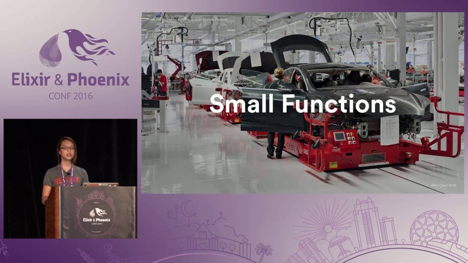

2016 · ElixirConf
Elixir と Phoenix でフロントエンドからフルスタックへ
From Front End to Full Stack with Elixir and Phoenix

見どころと解説
既存の API を Phoenix に移すには、すべてのルートを書き直すまでリリースを待つ必要があるだろうか。Lauren はリクエスト処理を組み合わせ可能なパイプラインとして組み立て、Terraform という名前の Plug で未移行のルートを既存の API に転送する。エンドポイントを一つずつ引き継げば、チームは言語を学びながら、変更した箇所の挙動を確かめられる。ここでの Terraform は、講演で紹介される Plug の名前だ。